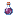

As Poções
Escolha uma poção e veja o passo a passo, do frasco de água até a versão mais forte. Mais abaixo: como montar o seu laboratório e todas as poções do jogo.
Qual poção você quer fazer? Clique em uma
Arraste para o lado para ver todas →
 Como fazer poções
Como fazer poções
Tudo começa no suporte de poções. Monte o seu laboratório uma vez e faça qualquer poção do jogo.

Todas as poçõesAs 19 poções que dá para fazer no suporte, com o ingrediente, o que cada uma faz e quanto tempo dura cada versão.